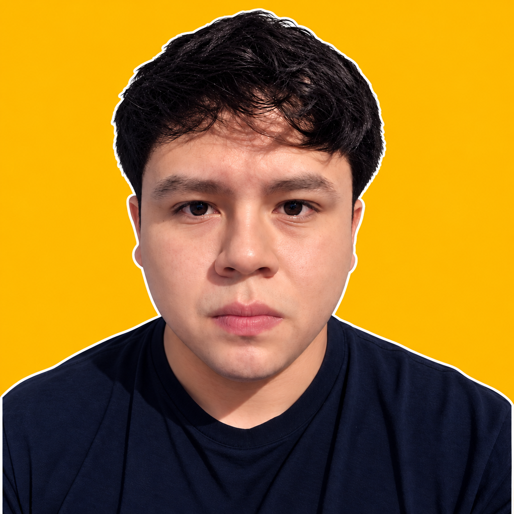
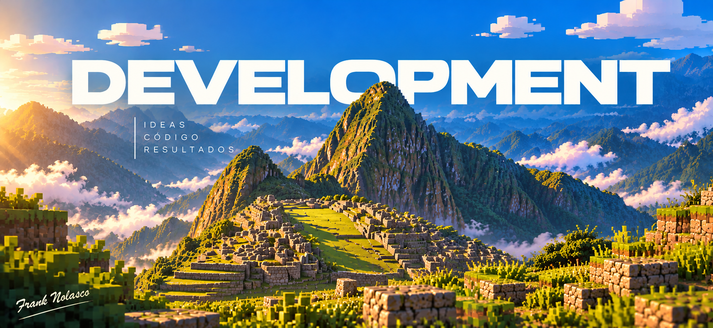

Órbita
ProductividadUn panel para ordenar tareas por estado, distinguir prioridades y seguir el progreso del equipo.


Organizar tareas, encontrar objetos para el hogar o preparar una ruta. Explora cómo cada interfaz ordena la información y facilita el siguiente paso.
Órbita · Productividad
Un panel para ordenar tareas por estado, distinguir prioridades y seguir el progreso del equipo.

Un catálogo de objetos para el hogar con filtros para acotar la búsqueda y fichas para consultar cada producto.

Destinos e itinerarios organizados por días para consultar las etapas de una ruta antes de viajar.
La colección reúne distintas formas de organizar tareas, productos y recorridos. En el catálogo puedes buscar por nombre o categoría y abrir cada ficha para conocer el problema, el objetivo y sus funciones principales.